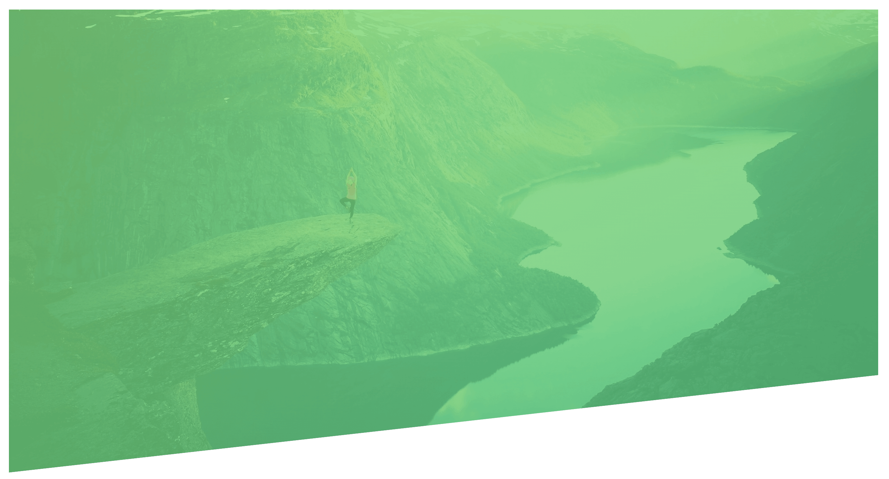
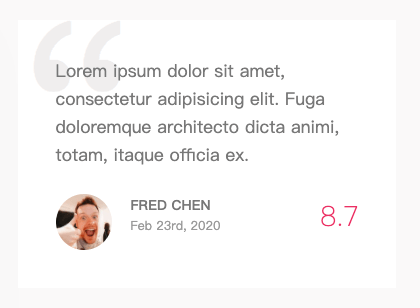

css 權重
優先順序,上至下
!important
element (style)
id
css 類別選擇器
html tag
default
1
2
3
4
5
6
7
8
9
10
11
12
13
14
15
16
17
18
19
20
| *,
*::after,
*::before {
margin: 0;
padding: 0;
box-sizing: inherit;
}
img {
max-width: 100%;
height: auto;
}
html {
font-size: 62.5%;
}
body {
box-sizing: border-box;
}
|
clip-path
透過剪裁方式改變形狀,以(x,y)方式來裁切.
1
2
3
| .polygon {
clip-path: polygon(0 0, 100% 0, 100% 75vh, 0 100%);
}
|

animation
1
2
3
4
5
6
7
8
9
10
11
12
13
14
15
16
17
18
19
20
21
22
23
24
25
26
27
| .heading-primary-main {
animation-name: moveInLeft;
animation-duration: 1s;
animation-timing-function: ease-out;
animation-iteration-count: 3;
animation-delay: 1.5s;
}
@keyframes moveInLeft {
0% {
opacity: 0;
transform: translate(-100px) rotate(0deg);
}
60% {
transform: rotate(180deg);
}
80% {
transform: translate(20px);
}
100% {
opacity: 1;
transform: translate(0);
}
}
|
z-index
以空間的概念來解釋,面對電腦螢幕,左右方向為 x 軸,上下則為 y 軸,面對自己的這個方向就是 z 軸囉！z-index 的值越大,代表離自己越靠近。反之 z-index 的值如果越小,就代表離自己越遠.
使用 z-index 必須搭配 position 語法來設定區塊位置.
1
2
3
4
5
6
7
8
9
10
11
12
13
14
15
16
| .review {
.text {
position: relative;
margin-right: 2rem;
z-index: 10;
}
.review::before {
content: "\201C";
position: absolute;
top: -0.35rem;
left: -1rem;
line-height: 1;
font-size: 20rem;
z-index: 1,
}
}
|
